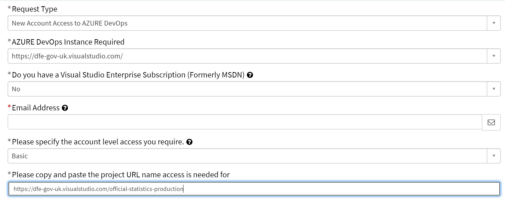

RAP Guidance for Statistics Producers
Guidance for how to implement the principles of Reproducible Analytical Pipelines (RAP) into our production processes.
What is RAP
Cam ran an introduction to RAP session for DISD in December 2020, the slides can be found on GitHub, and the recording is embedded below:
Reproducible Analytical Pipelines, or RAP for short. The full words still hide the true meaning behind buzzwords and jargon though. What it actually means is using automation to our advantage when analysing data, and this is as simple as writing code such as a SQL query that we can click a button to execute and do the job for us.
The cross-government group of RAP champions have laid out a minimum level of RAP to aim for (note that we have our own levels of practice below, which are building blocks to reach this end goal)
We already have ‘analytical pipelines’ and have done for many years. The aim of RAP, is to automate the parts of these pipelines that can be automated, to increase efficiency and accuracy, while creating a clear audit trail to allow analyses to easily be re-run if needed. This will free us up to focus on the parts of our work where our human input can really add value. RAP is something we can use to reduce the burden on us by getting rid of some of the boring stuff, what’s not to like!
Our scope
We want to focus on the parts of the production process that we have ownership and control over – so we are focussing on the process from data sources to publishable data files. This is the part of the process where RAP can currently add the most value - automating the production and quality assurance of our outputs currently takes up huge amount of analytical resource, which could be better spent providing insight and other value adding activity.

In Official Statistics production we are using RAP as a framework for best practice when producing our published data files, as these are the foundations of our publications moving forward. Following this framework will help us to improve and standardise our current production processes and provide a clear ‘pipeline’ for analysts to follow. This will have the added benefit of setting a clear and defined world of tools and skills required, making learning and development that much clearer and easier. To get started with RAP, we first need to be able to understand what it actually means in practice, and be able to assess our own work against the principles of RAP.
Implementing RAP for us will involve combining the use of SQL, R, and clear, consistent version control to increase efficiency and accuracy in our work. For more information on what these tools are, why we are using them, and resources to help up-skill in those areas, see our learning resources page.
The collection of, and routine checking of data as it is coming into the department is also an area that RAP can be applied to. We have kept this out of scope at the moment as the levels of control in this area vary wildly from team to team. If you would like advice and help to automate any particular processes, feel free to contact us.
Core principles
Data sources for a publication are stored in the same database - Preparing data
Underlying data files are produced using code, with no manual steps - Writing code
Files and scripts should be appropriately version controlled - Using version control
RAP in practice
The diagram below highlights what RAP means for us, and the varying levels in which it can be applied. The general expectation is that all teams will have shifted towards the good practice implementation of RAP by the end of their next production cycle. It’s worth acknowledging that some teams are already working around great and best practice levels, and that we appreciate every team’s situation is unique.
What is expected
Teams are expected to review their own processes using the publication self-assessment tool and use the guidance on this site to start making improvements towards meeting the four core principles if they aren’t already. If you would like additional help to review your processes, please contact the Statistics Development Team.
Teams will start from different places and implement changes at different rates, and in different ways. We do not expect that every team will follow the same path, or even end at the same point. Don’t worry if this seems overwhelming at first, use the guidance here to identify areas for improvement and then tackle them with confidence.
How to assess your publication
The checklist provided in the publication self-assessment tool is designed to make reviewing our processes against our RAP levels easier, giving a straightforward list of questions to check your work against. This will flag potential areas of improvement, and you can then use the links to go to the specific section with more detail and guidance on how to develop your current processes in line with best practice.
Some teams will already be looking at best practice, while others will still have work to do to achieve good practice. We know that all teams are starting this from different points, and are here to support all teams from their respective starting positions.
Where we need to focus
Most teams have already made progress with their production of tidy data files, and the release of the automated screener has now tied up that end point of the pipeline that we are all currently working towards. The standard pipeline for all teams will roughly resemble this:

The key now is for us to build on the work so far and focus on how we improve the quality and efficiency of our production processes up to that point. To do this, we need to make a concerted effort to standardise how we store and access our data, before then automating what we can to reduce the burden of getting the numbers ready and see the benefits of RAP. The exact meaning of this will vary within teams.
How to get started
The Statistics Development Team invites teams to take part in our partnership programme to develop their skills and implement RAP principles to a relevant project. Visit our page on getting started with the partnership programme for more details.
Preparing data
The first place to start for your teams RAP is to store the raw data you use to create underlying data in a Microsoft SQL Server database. This is similar to a sharepoint area or a shared folder, but it’s a dedicated data storage area which allows multiple users to use the same file at once, and for you to run code against the data in one place.
All source data stored in single database
What does this mean?
When we refer to ‘source data’, we take this to mean the data you use at the start of the process to create the underlying data files. Any cleaning at the end of a collection will happen before this.
In order for us to be able to have an end-to-end data pipeline where we can replicate our analysis across the department, we should store all of the raw data needed to create aggregate statistics in a managed Microsoft SQL Server. This includes any lookup tables and all administrative data from collections prior to any manual processing. This allows us to then match and join the data together in an end-to-end process using SQL queries.
As far as meeting the requirement to have all source data in the same database, databases other than SQL may be acceptable, though we can’t support them in the same way.
Why do it?
The principle is that this source data will remain stable and is the point you can go back to and re-run the processes from if necessary. If for any reason the source data needs to change, your processes will be set up in a way that you can easily re-run them to get updated outputs based on the amended source data with minimal effort.
SQL is a fantastic language for large scale data joining and manipulation; it allows us to replicate end-to-end from raw data to final aggregate statistics output. Having all the data in one place and processing it in one place makes our lives easier, and also helps us when auditing our work and ensuring reproducibility of results.
How to get started
For a collection of relevant resources to use when learning SQL, see our learning resources page, and for guidance on best practice when writing SQL queries, see the writing code and documentation sections on this page, as well as the guides immediately below on how to setup and use a SQL database.
How to set up a SQL working area
More to follow, in the meantime please contact us for advice.
Copying data from iStore
If your data is already in SQL, you can use this snippet of R code to move tables from one area (e.g. the iStore) to another (e.g. your team’s modelling area) to ensure all data are stored in a single database.
library(odbc)
library(dplyr)
library(dbplyr)
library(DBI)
# Step 1.1.: Connect to source server -------------------------------------------
con_source <- dbConnect(odbc(),
Driver = "SQL Server Native Client 11.0",
Server = "Name_of_source_server",
Database = "Source_database",
Trusted_Connection = "yes"
)
# Step 1.2.: Connect to target server
con_target <- dbConnect(odbc(),
Driver = "SQL Server Native Client 11.0",
Server = "Name_of_target_server",
Database = "Your_target_database",
Trusted_Connection = "yes"
)
# Step 2.1.: Pull the table from the source database
table_for_transfer <- tbl(con_source,in_schema("schema_name", "table_name")) %>% collect()
# Step 2.2.: Copy table into target database
dbWriteTable(con_target,"whatever_you_want_to_call_new_table", table_for_transfer)
Importing data to SQL Server
There’s lots of guidance online of how to import flat files from shared areas into Microsoft SQL server on the internet, including this guide.
Remember that it is important to import them with consistent, thought-through naming conventions. You will thank yourself later.
How to grant access to your area
More to follow, in the meantime please contact us for advice.
Writing code
The key thing to remember is that we should be automating everything we can, and the key to automation is writing code. Using code is as simple as telling your computer what to do. Code is just a list of instructions in a language that your computer can understand.
Processing is done with code
What does this mean?
All extraction, and processing of data should be done using code, avoiding any manual steps and moving away from a reliance on Excel, SPSS, and other manual processing. In order to carry out our jobs to the best of our ability it is imperative that we use the appropriate tools for the work that we do.
Even steps such as copy and pasting data, or pointing and clicking, are fraught with danger, and these risks should be minimised by using code to document and execute these processes instead.
Why do it?
Using code brings numerous benefits, computers are far quicker, more accurate, and far more reliable than humans in many of the tasks that we do. Writing out these instructions saves us significant amounts of time, particularly when it can be reused in future years, or even next week when one specific number in the source file suddenly changes, and also provides us with editable documentation for our production processes, saving the need for writing down information in extra documents.
Reliability is a huge benefit of the automation that RAP brings - when one of the lines of data has to be amended a week before publication, it’s a life saver to know that you can re-run your process in minutes, and reassuring to know that it will give you the result you want. You can run the same code 100 times, and be confident that it will follow the same steps in the same order every single time.
How to get started
See our learning resources for a wealth of resources on SQL and R to learn the skills required to translate your process into code.
There are also two sections below with examples of tidying data in SQL and R to get you started.
Ensure that any last-minute fixes to the process are written in the code and not done with manual changes.
Producing tidy underlying data in SQL
To get started, here is a SQL query that you can run on your own machine and walks you through the basics of tidying a simple example dataset in SQL.
Tidying and processing data in R
Here is a video of Hadley Wickham talking about how to tidy your data to these principles in R. This covers useful functions and how to complete common data tidying tasks in R. Also worth taking a look at applied data tidying in R, by RStudio.
Using the %>% pipe in R can be incredibly powerful, and make your code much easier to follow, as well as more efficient. If you aren’t yet familiar with this, have a look at this article that provides a useful beginners guide to piping and the kinds of functions you can use it for. The possibilities stretch about as far as your imagination, and if you have a function or task you want to do within a pipe, googling ‘how do I do X in dplyr r’ will usually start to point you in the right direction, alternatively you can contact us, and we’ll be happy to help you figure out how to do what you need.
A quick example of how powerful this is is below, where my_data is processed to create new columns, have column names renamed, have the column names tidied using the janitor package, blank rows and columns removed, data filtered to only include specific geographic levels, and rows rearranged in order, all in a few lines of easy to follow code:
processed_regional_data <- my_data %>%
mutate(newPercentageColumn = (numberColumn / totalPopulationColumn) * 100) %>%
rename(newPercentageColumn = percentageRate,
numberColumn = number,
totalPopulationColumn = population) %>%
clean_names() %>%
remove_empty() %>%
filter(geographic_level == "Regional") %>%
arrange(time_period, region_name)Helpful new functions in the tidyverse packages can help you to easily transform data from wide to long format (see tip 2 in the linked article for this, as it is often required for tidy data), as well as providing you with tools to allow you quickly and efficiently change the structure of your variables.
For further resources on learning R so that you’re able to apply it to your everyday work, have a look at the learning resources page.
Appropriate tools
What does this mean?
Using the recommended tools on our learning resources page (SQL, R and Git), or other suitable alternatives that allow you to meet the core principles. Ideally any tools used would be open source, Python is a good example of a tool that would also be well suited, though is less widely used in DfE and has a steeper learning curve than R.
Why do it?
There are many reasons why we have recommended the tools that we have, the recommended tools are:
- already in use at the department and easy for us to access
- easy and free to learn
- designed for the work that we do
- used widely across data science in both the public and private sector
- allow us to meet best practice when applying RAP to our processes
How to get started
Go to our learning resources page to read more about the recommended tools for the jobs we do, as well as looking at the resources available there for how to build capability in them. Always feel free to contact us if you have any specific questions or would like help in understanding how to use those tools in your work.
Open-source
We strongly recommend that teams make use of open-source software where possible, as well as making sure that our own work adheres to the same principles. There will be obvious data protection issues around sensitive data, however the code we use to process it can and should be made widely available. In practical terms this means moving away from the likes of SPSS, SASS and Excel VBA, and utilising the likes of R or Python, version controlled with git, and hosted in a publicly accessible repository.
By following our guidance in saving versions of code in an Azure DevOps, we will then be able to mirror those repositories in a publicly available GitHub area.
Open-source refers to something people can modify and share because its design is publicly accessible. For more information, take a look at this explanation of open-source, as well as this guide to working in an open-source way.
This is a key part of the technology code of practice as an agreed standard for digital services across government and is something that we as analysts and members of the Government Statistical Service can reap the benefits from. There are many benefits to adopting open-source software and using the principles in our analytical processes.
Using single code scripts
Utilising a single script to run processes brings a number of benefits, not least by allowing us to fully automate the process and remove the need to manually trigger different code scripts to get the outputs.
Connecting R to SQL
In order to create a single script to run all processes from, it is likely that you will need to use R to run SQL queries. If you are unsure of how to do this, take a look at the materials from Cathy Atkinson’s coffee and coding session on connecting R to SQL using DBI and odbc.
Chris Mason-Thom recently did another coffee and coding session on this, which you can watch below:
Single production scripts
What does this mean?
Each file can be created by running a single script.
This script should take the source data right through to final output at the push of a button, including any manipulation, aggregation, suppression etc.
Why do it?
Having a single script for this saves time when needing to rerun processes, and provides a clear documentation of how a file is produced.
How to get started
More to follow, in the meantime please contact us for advice.
Single production scripts with integrated QA

What does this mean?
All quality assurance for a file is also included in the single script that can be used to create a file from source data.
Why do it?
This documents the entire process around the data file in a single place. This makes it easier for new analysts to pick up the process, as well as making it quicker and easier to rerun as all reports relating to that file are immediately available if you ever make changes file.
How to get started
More to follow, in the meantime please contact us for advice.
Single publication production script
What does this mean?
The ultimate aim is to utilise a single script to run off everything for a publication, the data files, any QA, any summary reports. This script should allow you to run individual outputs by themselves as well, so make sure that each data file can be run in isolation by running single lines of this script.
Why do it?
This carries all of the same benefits as having a single master script for a file, but at a wider publication level, effectively documenting the entire publication process in one place.
How to get started
The Education, Health and Care Plans production cycle is a good example of a single publication script. They have kept their actual data processing in SQL, but all the running and manipulation of the data happens in R.
The cycle originally consisted of multiple SQL scripts, manual QA and generation of final files.

The team now have a single end-to-end fully documented process, which runs off of one single R script. The R code points at the SQL scripts to run them all in one go, and also creates a QA report and corresponding metadata files that pass the data screener. Each data file can still be run in isolation from this script.

Recyclable code for future use
What does this mean?
We’d expect that any recyclable code would take less than 30 minutes of editing before being able to run again in a future iteration of the publication.
Why do it?
One huge benefit that comes with using code in our processes, is that we can pick them up in future years and reuse with minimum effort, saving us huge amounts of resource. To be able to do this, we need to be conscious of how we write our code, and write it in a way that makes it easy to use in future releases for the publication.
How to get started
Review your code and consider the following:
- What steps might need re-editing or could become irrelevant?
- Can you move all variables that require manual input (e.g. table names, years) to be assigned at the top of the code, so it’s easy to edit in one place with each iteration?
- Are there any fixed variables that are prone to changing such as geographic boundaries, that you could start preparing for changes now by making it easy to adapt in future?
For example, if you refer to the year of publication in your code a lot, consider replacing every instance with a named variable, which you only need to change once at the start of your code. In the example below, the year is set at the top of the code, and is used to define “prev_year”, both of which are used further down the code to filter the data based on year.
this_year <- 2020
prev_year <- this_year - 1
data_filtered <- data %>%
filter(year == this_year)
data_filtered_last_year <- data %>%
filter(year == prev_year)Standards for coding
Code can often be written in many different ways, and in languages such as R, there are often many different functions and routes that you can take to get to the same end result. On top of that, there are even more possibilities for how you can format the code. This section will take you through some widely used standards for coding to help bring standardisation to this area and make it easier to both write and use our code.
Clean final code
What does this mean?
This code should meet the best practice standards below (for SQL and R). If you are using a different language, such as Python, then contact us for advice on the best standards to use when writing code.
There should be no redundant or duplicated code, even if this has been commented out. It should be removed from the files to prevent confusion further down the line.
The only comments left in the code should be those describing the decisions you have made to help other analysts (and future you) to understand your code. More guidance on commenting in code can be found later on this page.
Why do it?
Clean code is efficient, easy to write, easy to review, and easy to amend for future use. Below are some recommended standards to follow when writing code in SQL and R.
How to get started
Watch the coffee and coding session introducing good code practice below:
Then you should also watch the follow up intermediate session:
Clean code should include comments. Comment why you’ve made decisions, don’t comment what you are doing unless it is particularly complex as the code itself describes what you are doing. If in doubt, more comments are better than too few though. Ideally any specific comments or documentation should be alongside the code itself, rather than in separate documents.
SQL
For best practice on writing SQL code, here is a particularly useful word document produced by our Data Hub. This outlines a variety of best practices, ranging from naming conventions, to to formatting your SQL code so that it is easy to follow visually.
R
When using R, it is generally best practice to use R projects as directories for your work.
The recommended standard for styling your code in R, is the tidyverse styling, which is fast becoming the global standard. What is even better is that you can automate this using the styler package, which will literally style your code for you at the click of a button, and is well worth a look.

There is also plenty of guidance around the internet for best practice when writing efficient R code.
HTML
If you ever find yourself writing html, or creating it through rmarkdown, you can check your html using w3’s validator.
Peer reviewing code
Peer review is an important element of quality assuring our work. We often do it without realising by bouncing ideas off of one another and by getting others to ‘idiot check’ our work. When writing code, ensuring that we get our work formally peer reviewed is particularly important for ensuring it’s quality and value.
Review of code within team
What does this mean?
Is someone else in the team able to generate the same outputs?
Has someone else in the team reviewed the code and given feedback?
Have you taken on their feedback and improved the code?
Why do it?
There are many benefits to this, for example:
Ensuring consistency across the team
Minimizing mistakes and their impact
Ensuring the requirements are met
Improving code performance
Sharing of techniques and knowledge
How to get started
If you can’t answer yes, then:
Get a member of the team to run the code using only your documentation
Use their feedback to improve documentation/in-line comments in code
Other tips for getting started with peer review can be found in the Duck Book
Improving code performance
Peer reviewing code and not sure where to start? Improving code performance can be a great quick-win for many production teams. There will be cases where code you are reviewing does things in a slightly different way to how you would: profiling the R code with the microbenchmark package is a way to objectively figure out which method is more efficient.
For example below, we are testing out case_when, if_else and ifelse.
microbenchmark::microbenchmark(
case_when(1:1000 < 3 ~ "low", TRUE ~ "high"),
if_else(1:1000 < 3, "low", "high"),
ifelse(1:1000 < 3, "low", "high")
)Running the code outputs a table in the R console, giving profile stats for each expression. Here, it is clear that on average, if_else() is the fastest function for the job.
Unit: microseconds
expr min lq mean median uq max neval
case_when(1:1000 < 3 ~ "low", TRUE ~ "high") 167.901 206.2510 372.7321 300.2515 420.1005 4187.001 100
if_else(1:1000 < 3, "low", "high") 55.301 74.0010 125.8741 103.7015 138.3010 538.201 100
ifelse(1:1000 < 3, "low", "high") 266.200 339.4505 466.7650 399.7010 637.6010 851.502 100
Review of code from outside the team
What does this mean?
Has someone from outside of the team and publication area reviewed the code and given feedback?
Have you taken on their feedback and improved the code?
Why do it?
All of the benefits you get from peer reviewing within your own team, multiple times over. Having someone external offers new perspectives, holds you to account by breaking down assumptions, and offers far greater opportunity for building capability through knowledge sharing.
How to get started
While peer reviewing code within the team is often practical, having external analysts peer review your code can bring a fresh perspective. If you’re interested in this, please contact us, and we can help you to arrange someone external to your team to review your processes. For this to work smoothly, we recommend that your code is easily accessible for other analysts, such as hosted in an Azure DevOps repo and mirrored to github.
Automated quality assurance
Any data files that have been created will need to be quality assured. These checks should be automated where possible, so the computer is doing the hard work - saving us time, and to ensure their reliability.
Some teams are already making great progress with automated QA and realising the benefits of it. The Statistics Development Team are working with these to provide generalised code that teams can use as a starting point for automated QA. The intention is that teams can then run this as a minimum, before then looking to develop more area specific checks to the script and/or continue with current checking processes in tandem. If your team already use, or are working towards using, automated QA then get in touch as we’d be keen to see what you have.
It is assumed that when using R, automated scripts will output .html reports that the team can read through to understand their data and identify any issues, and save as a part of their process documentation.
Basic automated QA
What does this mean?
The list of basic automated QA checks, with code examples can be found below and in our GitHub repository:
Checking for minimum, maximum, and average values across your data
Checking for extreme values and outliers
Ensuring there are no duplicate rows or duplicate columns
Checking that where appropriate, geographical subtotals add up to totals (e.g. all the numeric values for LAs in Yorkshire and The Humber add up to the regional total)
Basic trend analysis using scatter plots, to help you spot outliers and help tell the story of your data.
The Statistics Development Team are developing the QA app to include these basic QA outputs, more will follow in this space when this is ready.
Why do it?
Quality is one of the three pillars that our code of practice is built upon. These basic level checks allow us to have confidence that we are accurately processing the data.
Automating these checks ensures their accuracy and reliability, as well as being dramatically quicker than doing these manually.
How to get started
Try using our template code snippets to get an idea of how you could automate QA of your own publication files. A recording of our introduction to automated QA will follow in due course, but in the meantime please contact us for advice.
Publication specific automated QA
What does this mean?
Many teams will have aspects of their data and processes that require Quality Assuring beyond the generalisable basic checks above. Therefore it is expected that teams develop their own automated QA checks to QA specificities of their publications not covered by the basic checks.
Why do it?
Quality is one of the three pillars that our code of practice is built upon. By building upon the basic checks to develop bespoke QA for our publications, we can increase our confidence in the quality of the processes and outputs that they produce.
How to get started
We expect that the basic level of automated QA will cover most needs that publication teams have. However, we also expect that each publication will have it’s own quirks that require a more bespoke approach. An example of a publication with it’s own bespoke QA checks will appear in this space shortly. For the time being, try to consider what things you’d usually check as flags that something hasn’t gone right with your data. What are the unique aspects of your publication’s data, and how can you automate checks against them to give you confidence in it’s accuracy and reliability?
For those who are interested in starting writing their own QA scripts, it’s worth looking at packages in R such as testthat, including the coffee and coding talk on it by Peter Curtis, as well as this guide on testing by Hadley Wickham.
The janitor package in R also has some particularly useful functions, such as clean_names() to automatically clean up your variable names, remove_empty() to remove any completely empty rows and columns, and get_dupes() which retrieves any duplicate rows in your data - this last one is particularly powerful as you can feed it specific columns and see if there’s any duplicate instances of values across those columns.
Automating summary statistics
As a part of automating QA, we should also be looking to automate the production of summary statistics alongside the tidy underlying data files, this then provides us with instant insight into the stories underneath the numbers.
Automated summaries
What does this mean?
Summary outputs are automated and used to explore the stories of the data.
The Statistics Development Team are developing the QA app to include basic summary outputs, more will follow in this space when this is ready.
Why do it?
Value is one of the three pillars of our code of practice. Even more specifically it states that ‘Statistics and data should be presented clearly, explained meaningfully and provide authoritative insights that serve the public good.’.
As a result, we should be developing automated summaries to help us to better understand the story of the data and be authorative and rigorous in our telling of it.
How to get started
More to follow, in the meantime please contact us for advice.
Publication specific automated summaries
What does this mean?
Have you gone beyond the outputs of the QA app to consider automating further insights for your publication specifically? E.g. year on year changes for specific measures, comparisons of different characteristics that are of interest to the general public
Are you using these outputs to write your commentary?
Why do it?
All publications are different, and therefore it is important that for each publication, teams go beyond the basics and produce automated summaries specific to their area.
How to get started
Consider:
Integrating extra publication-specific QA into the production process
Consider outputs specific to your publication that would help you to write commentary/draw out interesting analysis
Version control
When you assume you make an ‘ass’ out of ‘u’ and ‘me’. Everyone knows this saying, yet few of us heed it’s warning.
The aim should be to leave your work in a state that others (including future you!), can pick it up and immediately find what they need, understanding the processes that have happened previously. Changes to files should be documented, and published versions should be clearly named and stored in their own folder.
As we work with code to process our data more and more, we can begin to utilise version control software to make this process much easier, allowing simultaneous collaboration on files.
Sensible folder and file structure
What does this mean?
As a minimum you should have a folder that includes all of the final versions of documents produced and published, per release, within a folder for the wider publication. Ask yourself if it would be easy for someone who isn’t in the team to find specific files, and if not, is there a better way that you could name and structure your folders to make them more intuitive to navigate?
Why do it?
How you organize and name your files will have a big impact on your ability to find those files later and to understand what they contain. You should be consistent and descriptive in naming and organizing files so that it is obvious where to find specific data and what the files contain.
How to get started
Some questions to help you consider whether your folder structure is sensible are:
- Are all documentation, code and outputs for the publication saved in one folder area?
- Is simple version control clearly applied (e.g. having all final files in a folder named “final”?
- Are there sub-folders like ‘code’, ‘documentation’‘, ’outputs’ and ‘final’ to save the relevant working files in?
- Are you keeping a version log up to date with any changes made to files in this final folder?
Naming conventions
Having a clear and consistent naming convention for your files is critical. Remember that file names should:
Be machine readable
- Avoid spaces.
- Avoid special characters such as: ~ ! @ # $ % ^ & * ( ) ` ; < > ? , [ ] { } ‘ “.
- Be as short as practicable; overly long names do not work well with all types of software.
Be human readable
- Be easy to understand the contents from the name.
Play well with default ordering
- Often (though not always!) you should have numbers first, particularly if your file names include dates.
- Follow the ISO 8601 date standard (YYYYMMDD) to ensure that all of your files stay in chronological order.
- Use leading zeros to left pad numbers and ensure files sort properly, avoiding 1,10,2,3.
If in doubt, take a look at this presentation, or this naming convention guide by Stanford, for examples reinforcing the above.
Documentation
What does this mean?
You should be annotating as you go, ensuring that every process and decision made is written down. Processes are ideally written with code, and decisions in comments.
There should be a README notes file, that clearly details the steps in the process, any dependencies (such as places where access needs to be requested to) and how to carry out the process.
Any specialist terms should also be defined if required (e.g. The NFTYPE lookup can be found in xxxxx. “NFTYPE” means school type).
Why do it?
When documenting your processes you should leave nothing to chance, we all have wasted time in the past trying to work out what it was that we had done before, and that time increases even more when we are picking up someone else’s work. Thorough documentation saves us time, and provides a clear audit trail of what we do. This is key for the ‘Reproducible’ part of RAP, our processes must be easily reproducible and clear documentation is fundamental to that.
How to get started
Take a look at your processes and be critical - could another analyst pick them up without you there to help them? If the answer is no (don’t feel ashamed, it will be for many teams) then go through and note down areas that require improvement, so that you can revise them with your team.
Take a look at the sections below for further guidance on improving your documentation.
Commenting in code
When writing code, whether that is SQL, R, or something else, make sure you’re commenting as you go. Start off every file by outlining the date, author, purpose, and if applicable, the structure of the file, like this:
----------------------------------------------------------------------------------------------
-- Script Name: Section 251 Table A 2019 - s251_tA_2019.sql
-- Description: Extraction of data from IStore and production of underlying data file
-- Author: Cam Race
-- Creation Date: 15/11/2019
----------------------------------------------------------------------------------------------
----------------------------------------------------------------------------------------------
--// Process
-- 1. Extract the data for each available year
-- 2. Match in extra geographical information
-- 3. Create aggregations - both categorical and geographical totals
-- 4. Tidy up and output results
-- 5. Metadata creation
----------------------------------------------------------------------------------------------Commented lines should begin with – (SQL) or # (R), followed by one space and your comment. Remember that comments should explain the why, not the what.
In SQL you can also use /** and **/ to bookend comments over multiple lines.
In rmarkdown documents you can bookend comments by using <!-- and -->.
Use commented lines of - to break up your files into scannable chunks based upon the structure and subheadings, like the R example below:
# Importing the data -----------------------------------------------------------------------------------
Doing this can visually break up your code into sections that are easy to navigate around. It will also add that section to your outline, which can be used in RStudio using Ctrl-Shft-O. More details on the possibilities for this can be found in the RStudio guidance on folding and sectioning code.
You might be thinking that it would be nice if there was software that could help you with documentation, if so, read on, as Git is an incredibly powerful tool that can help us easily and thoroughly document versions of our files. If you’re at the stage where you are developing your own functions and packages in R, then take a look at roxygen2 as well.
Writing a README file
What does this mean?
A README is a text file (.txt) that introduces and explains a project. It contains information that is required to understand what the project is about and how to use it.
Why do it?
It’s an easy way to answer questions that your audience will likely have regarding how to install and use your project and also how to collaborate with you.
How to get started
As a starting point, you should aim to have as many of the following sections as are applicable to your project:
- Introduction
- Requirements (access, software, skills/knowledge)
- How to use
- How to contribute
- Contact details
The Self-assessment tool and the QA app give two examples of this.
Version control with git
If you do not already have git downloaded, you can download the latest version from their website.
For now, take a look at at the resources for learning Git on the learning resources page.
Version controlled final code scripts
What does this mean?
This means having the final copies of code and documentation saved in a git-controlled Azure DevOps repo in the official-statistics-production area.
Why do it?
Having the final copy of the scripts version controlled gives assurance around how the data was created. It also allows teams to easily record any last minute changes to the code after the initial final version by using the version control to log this.
How to get started
The first step is to get your final versions of code and documentation together in a single folder.
We have a specific area set up for you to host your publication code in on the dfe-gov-uk instance of Azure DevOps, entitled official-statistics-production.
To gain access to this area, please raise a request on service desk by navigating through the pages detailed in the animation below.

Once you have navigated to this page, fill out the form with the following details and send your request off.

Access is usually granted within a few working days. Alert the Statistics Development Team when this is confirmed, and we will set up/give you access to your repository.
Open source repositories
What does this mean?
Repositories that are visible to the public.
Why do it?
It’s a key part of the technology code of practice as an agreed standard for digital services across government. See the open source section for more details.
How to get started?
Contact us to get a repository set up in our dfe-analytical-services area on GitHub.
In general, if you’re thinking of making an Official Statistics production repository public, you should consider the following (assuming that you are using R, though these principles will apply more widely):
- Follow the guidance on writing a readme file, and add context in about what Official/National statistics are
- Ensure no data (either input or output) is included in the repository
- Have a clear and organised folder structure (such as having R scripts in an ‘R’ folder)
- Check your code is styled according the tidyverse styling
- Use renv for package management
- Use an R project
Collaboratively develop code using git
What does this mean?
Has code development taken place in git, collaboratively across the team?
Are you making use of pull requests for team members to review and comment on code updates?
Is there a clear paper trail of changes to code (commits)?
Why do it?
Using git allows multiple people to simultaneously develop the same code using branches, all with a crystal clear audit trail showing what changes were made when using commits. It makes it easy for team members to review changes via pull requests.
How to get started
To get started you should:
Get your code into a git controlled folder
Get code into a git controlled folder in whatever version it is currently in. Use the following steps to do so:
Open the folder where your project is saved, right click anywhere in that window, and click “Git Bash Here”.
This will open a black box. Type in the following and hit enter
git init2a. If you are setting up git for the first time, or haven’t used it in a while, you will need to configure your proxy settings. Type the following, replacing your DfE username where appropriate, and hit enter after each line.
git config --global http.proxy http://USERNAME@mwg.proxy.ad.hq.dept:9090
git config --global https.proxy https://USERNAME@mwg.proxy.ad.hq.dept:9090
git config --global http.sslverify false If git continues to return a 407 error, please try the following lines instead:
git config --global http.proxy http://[AD\\USERNAME]@mwg.proxy.ad.hq.dept:9090
git config --global https.proxy https://[AD\\USERNAME]@mwg.proxy.ad.hq.dept:9090
git config --global http.sslverify false - After hitting enter, type in the following and hit enter again after each line. You will need the URL of your Azure DevOps repository to complete this step. Contact the Statistics Development Team if you are not sure what this is or do not have one.
git add .
git commit -m "first commit"
git remote add origin YOUR_URL_HERE
git push -f origin --allYou may be prompted for either your windows or git credentials at this stage.
If prompted for your windows credentials, enter the username and password combination you use to log into your DfE device.
If prompted for your git credentials, visit your online repository, click on the blue “clone” box, and click “generate git credentials”. This will generate a username and password for you to enter.
- Visit your repository online, and check that all the files have uploaded. Other members of your team will now be able to work from your code.
Build capability within the team
Ensure all team members have access to your project in the Azure DevOps official-statistics-production area. Contact the Statistics Development Team if there are any issues.
Get team members to clone your repository in to their personal area, so everyone is able to work on code at the same time.
To clone code, they will need to do the following:
Run through steps 1 - 2a of getting a file into a git controlled folder
After running those lines, type in the following with your repository URL in the “YOUR_URL_HERE” space. This will clone the online repository to your local area.
git clone YOUR_URL_HERE- Make use of git and version control in your team projects regularly. Like learning anything new, putting it into practice regularly is the best way to become confident in using it.
Please refer to the other links on the learning resources page to learn more about how to use git in practice.